Visual Bible.
One object, reconstructed through the act of seeing.
Selected image targets and production decisions for the ten-part exhibition. These are the curated AI art-direction frames that preceded implementation. They are not browser screenshots.
The governing idea
A form does not exist
only in matter.
It also exists in the act of seeing. The exhibition returns to one recognizable architectural silhouette: a weighted black mass, an oblique aperture, polished internal cuts and one luminous incision.
Three opening directions were compared before development. The ivory gallery was selected for its silhouette, scale, light and space for typography. Darkness and optical film become later perceptual conditions.
Production grammar
- Image quality first. Choose the medium for the behavior the scene actually needs.
- Use generated cutouts, material maps and architecture as production assets where they strengthen the image.
- Use persistent geometry and a real camera for fragmentation, exact alignment, entering the rift and reassembly.
- Render mirrors and refraction from the live scene. Keep the interface readable and restrained.
- One native scroll timeline. Deliberate rests. The same state in either direction.
Material hierarchy
Mass. Cut. Incision.
#e9e2d6
#111110
Reflective
#090909
Bodoni Moda supplies the sharp editorial display. Manrope provides small functional text. Cobalt, violet and restrained amber belong to the interaction of light and material. There are no decorative interface gradients, floating particles or unrelated sculptures.
Object
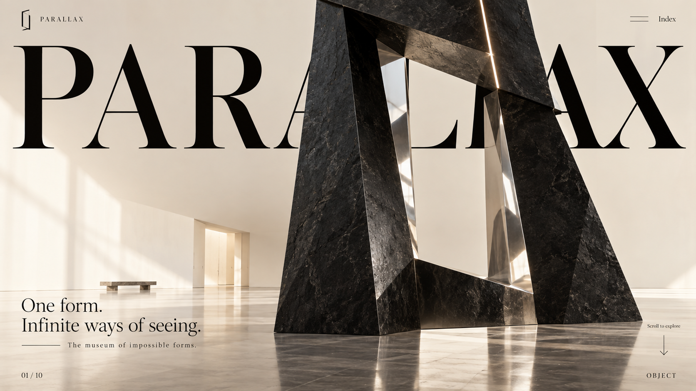
AI direction and direct artSelected ivory hero; separate full object cutout and empty gallery plate. The title remains editable DOM text.
Runtime production decisionAI cutout + architectural plate + quiet 2.5D separation. Scale, crop and title occlusion establish the first image.
Fragment
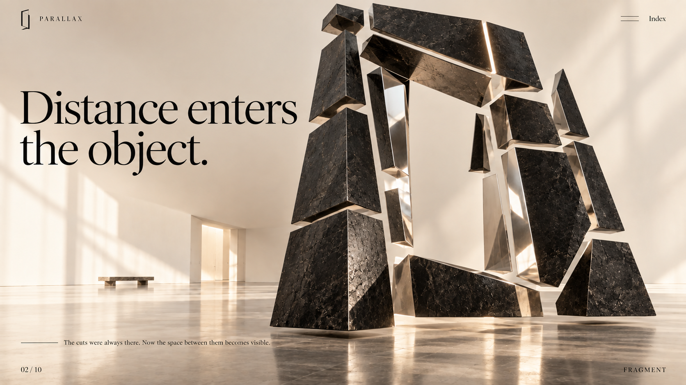
AI direction and direct artExploded master-form target, polished cut-face treatment and black-stone material.
Runtime production decisionEighteen persistent beveled fragments separate along authored positions and rotations. Their silhouette remains traceable.
Alignment
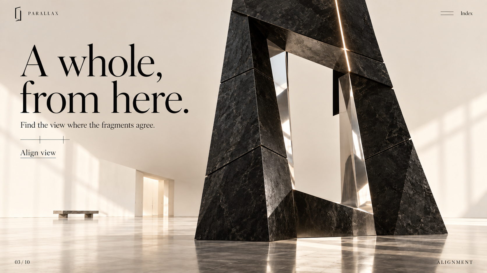
AI direction and direct artAn anamorphic composition defining the single-view visual target.
Runtime production decisionFragments are scaled and positioned along rays from a reference perspective camera. A changed camera reveals their separate depths; Align view restores the exact reference.
Reflection
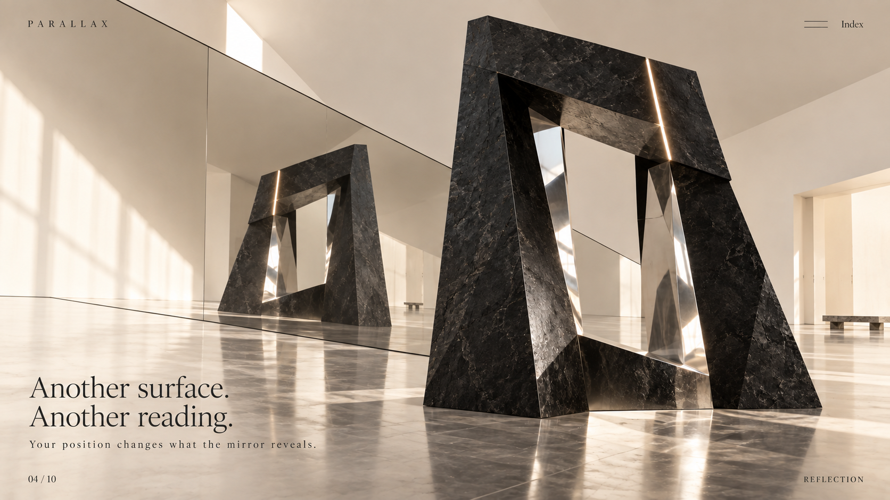
AI direction and direct artA receding mirrored wall, a second view of the same sculpture, quiet room light.
Runtime production decisionA reflected camera and render target update with the sculpture and viewpoint. The room art becomes part of the reflected environment.
Rift
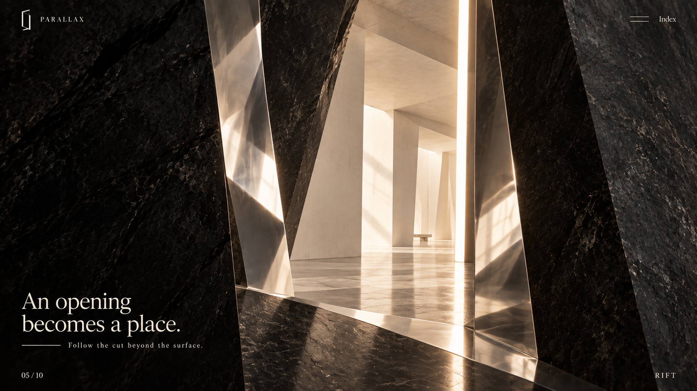
AI direction and direct artClosed, opening, interior and beyond studies establish architectural depth.
Runtime production decisionThe actual mass opens while the camera travels through its plane. Deep piers and slabs occlude a distant architectural projection.
Membrane
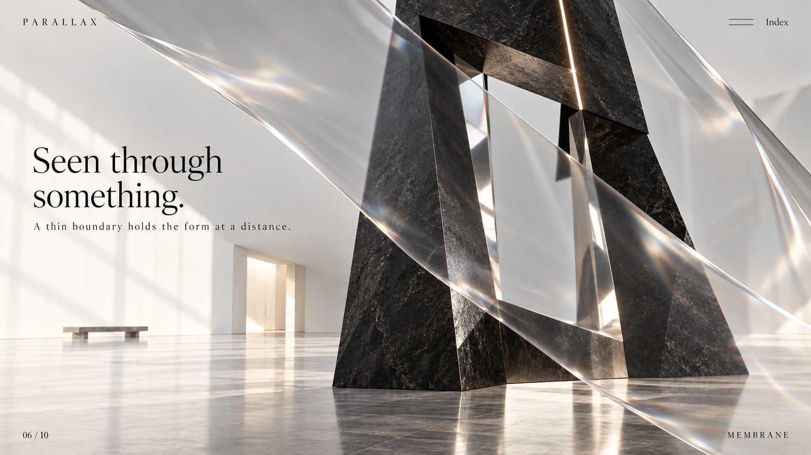
AI direction and direct artA thin tensioned optical surface, diagonal composition and controlled edge reflections.
Runtime production decisionA subdivided optical mesh refracts a live scene capture and gallery background. A bounded crease changes apparent depth without replacing the sculpture.
Chroma
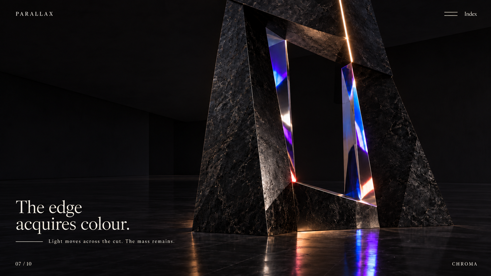
AI direction and direct artA refined palette of cobalt and violet, with restrained ruby/amber on optical cuts.
Runtime production decisionPhysical chrome, angle-sensitive iridescence and authored light bring colour to the cut surfaces while the primary mass stays dark.
Halo
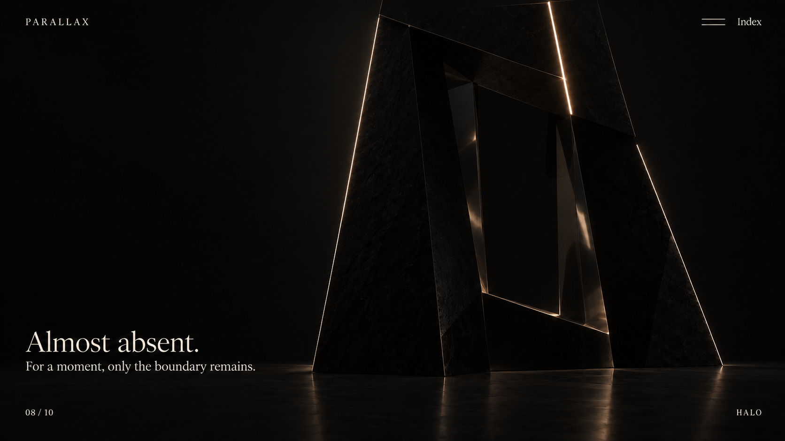
AI direction and direct artA refined boundary-light study with greatly reduced body illumination.
Runtime production decisionThe existing form loses light. Its outer and aperture contours, plus the signature slit, remain. No new halo ring or particle system.
Reassembly
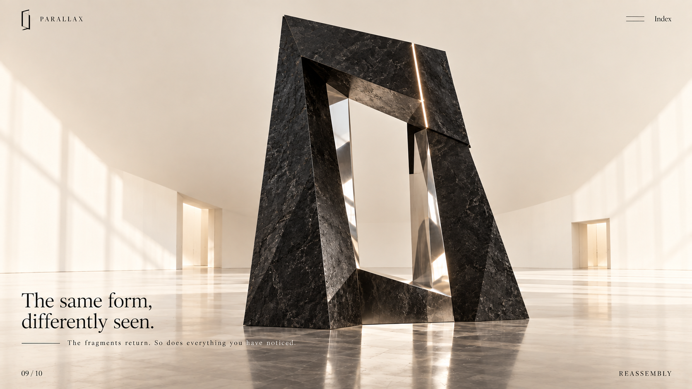
AI direction and direct artA final assembled master-frame target, restoring weight and material hierarchy.
Runtime production decisionThe same fragments return to their stored rest transformations. There is no replacement object or image substitution.
The museum
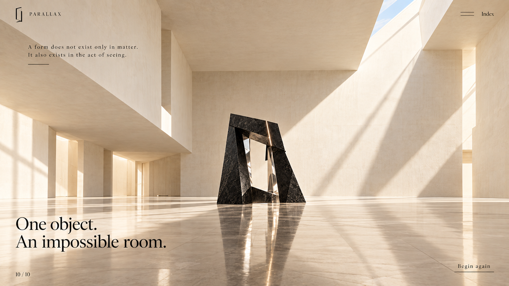
AI direction and direct artA monumental gallery target and a separately generated empty architectural plate.
Runtime production decisionThe live master object recedes into the room through an authored camera path. A real floor reflection connects it to the architectural setting.
Selected study
Eight surfaces. One hierarchy.
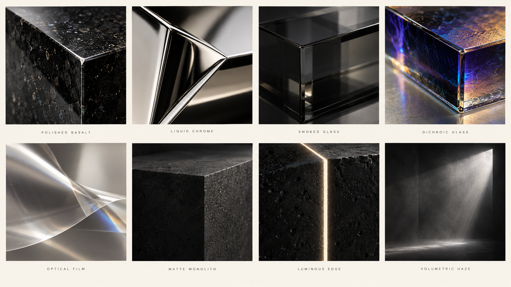
The study explores more than the production object uses. Black stone, chrome and one incision remain the core. Optical film and coloured light are viewing conditions.
Selected transition study
An incision becomes depth.
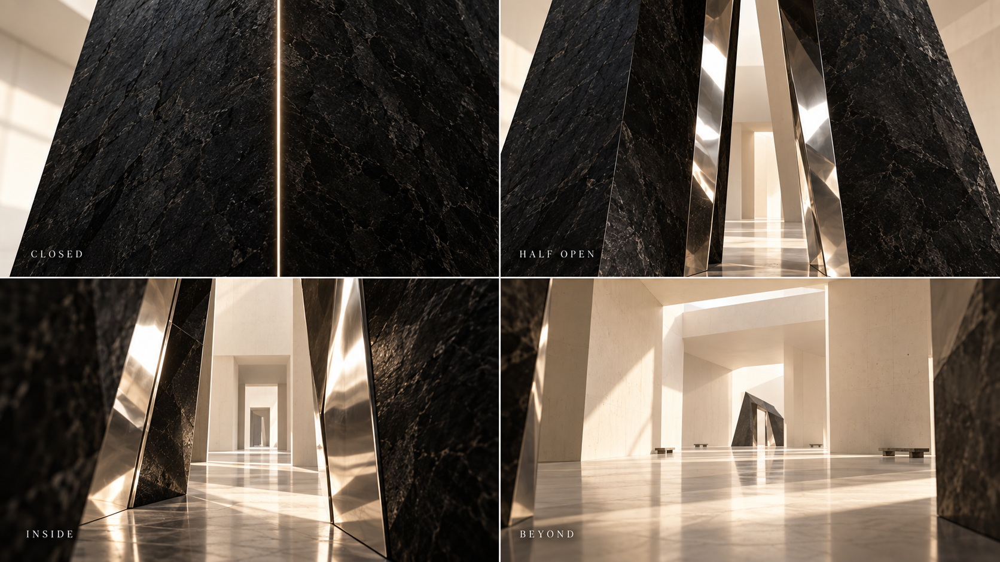
The authored camera must cross the actual geometry. The distant plate supplies atmosphere; near and intermediate surfaces supply occlusion and parallax.
A separate composition
Small screen.
Same presence.
The phone view reorganizes the sculpture and caption vertically. The title remains a complete word; the object can be understood before the visitor scrolls. The index, alignment action and motion preference remain usable by touch.
Reduced motion selects composed chapter poses, removes pointer parallax and uses instant anchor travel. A labelled still view preserves the artwork and text if WebGL is unavailable.
The portrait image is a selected art-direction reference. Actual source dimensions and complete generation prompts are in asset provenance.
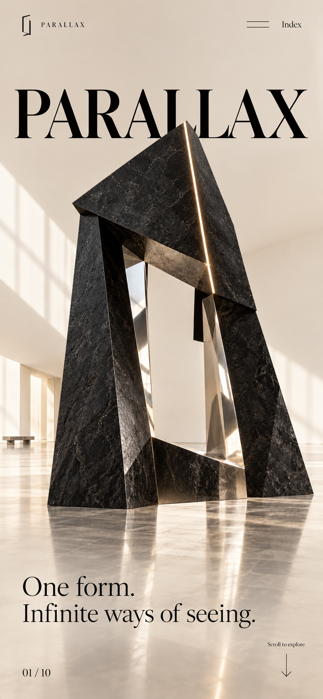
Image, space and behavior.
| System | Decision |
|---|---|
| Typography | Live DOM headings, complete readable copy, restrained navigation. The work can occlude decorative title letters without removing the accessible heading. |
| Motion | Separate → suspend → align → reflect → enter → refract → colour → almost disappear → reassemble → step back. |
| Resolution | Live geometry and type render at the viewport resolution. Source AI raster dimensions are recorded honestly; a 4K viewport is not a claim that every source image was generated natively at 4K. |
| Review | Compare each stopped scene with its selected target. Correct material, composition, perspective, edge quality and readability before accepting the behavior. |
Detailed Visual Bible and production matrix · Asset provenance · Run the local exhibition